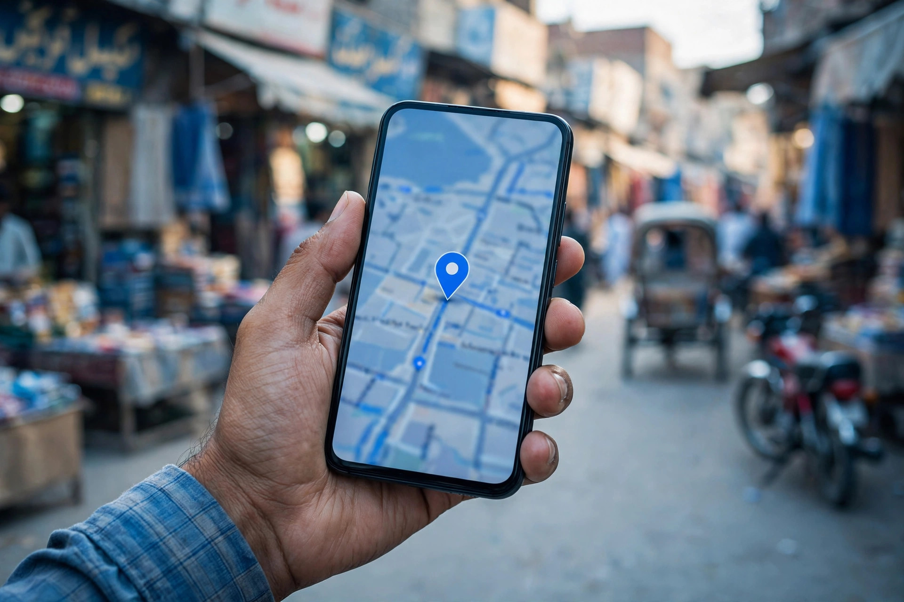

When someone in Dera Ghazi Khan needs a service, the search usually starts on a phone. A patient looks for a specialist nearby, a parent searches for an academy, a shopper checks which store is open. Google answers with a map and a short list of businesses, and most people choose from that short list without scrolling further. If your business is not on that map, or your listing looks empty next to competitors, those customers go somewhere else.
Dera Ghazi Khan is the largest city in this part of south Punjab, and that changes the local search game. There are more hospitals, academies, markets and property dealers competing for the same searches than in any small town nearby. A complete, well-kept Google Business Profile is what puts you in that competition. This article walks through the steps that matter most.
Start With a Verified, Complete Profile
Everything begins with claiming and verifying your Google Business Profile. Until a profile is verified, Google shows it with less confidence and you cannot control much of what people see. Fill in every field: business name exactly as it appears on your signboard, full address, phone number, opening hours, and a description that says clearly what you do and who you serve.
Accuracy matters more than decoration. If your phone number on Maps differs from the number on your shop board or Facebook page, customers get confused and Google trusts the listing less. Use one name, one address and one phone number everywhere. Our guide on SEO for Dera Ghazi Khan businesses covers how these details work together with your website.

Choose Categories That Match Real Searches
Your primary category is one of the strongest signals on a Maps listing. A clinic listed under a general category will struggle to appear when people search for the specific treatment they need. Pick the category that best describes what the business mainly is, then add secondary categories for the other services you genuinely offer, such as a lab, pharmacy or specific department.
List your services inside the profile as well. When a hospital or academy writes out its services in plain words, the profile can match more of the searches people actually type, including searches in simple, everyday language.
Place the Pin Where Customers Really Arrive
In a spread-out city, a wrongly placed pin causes real problems. Customers follow directions, end up in the wrong street, and leave annoyed. Check your pin on the map yourself: it should sit on your actual building or the correct entrance, especially for businesses inside busy commercial areas where several shops share one road. If the pin is wrong, suggest the correction and confirm it on your own phone before assuming it is fixed.
Photos and Reviews Decide Who Gets Chosen
Appearing on the map is only half the job. When three similar businesses appear together, people compare photos and reviews before tapping call or directions. Add clear photos of your front, your interior, your team at work and your products or facilities. Then ask satisfied customers, politely and in person, to leave an honest review, and reply to every review you receive. Our article on Google reviews for Dera Ghazi Khan businesses explains how to do this properly without shortcuts.

Keep Hours, Posts and Details Updated
A listing that says open when you are closed damages trust quickly. Update hours for holidays and special days, add new photos from time to time, and use profile posts for genuine updates such as admission openings, new services or seasonal timings. Small, regular updates tell both Google and customers that the business is active and cared for.
Also use the extra fields Google offers your type of business. Clinics can list departments and services, academies can mention the classes and boards they prepare students for, and shops can note things like home delivery or parking if they genuinely offer them. These small details help your listing match more searches and help customers decide faster once they find you.
How Zaheer Seo Expert Helps From Layyah
Zaheer Seo Expert is based in Layyah and has no office in Dera Ghazi Khan. We serve Dera Ghazi Khan businesses from Layyah, because SEO and Google Business Profile work is done online and by phone. If you want your listing set up properly, see our page on SEO services in Dera Ghazi Khan and local SEO and Google Business Profile optimization, then call or email to discuss your business.
Frequently Asked Questions
Why does my Dera Ghazi Khan business not show on Google Maps?
Common reasons are an unverified or incomplete profile, a wrong business category, a pin placed in the wrong spot, or very few reviews. Fixing the profile details and correcting the pin usually improves visibility over time.
Can I appear on Maps if customers search from another part of the city?
Distance is one factor Google considers, so a business usually shows most strongly near its own location. A complete profile, correct categories and good reviews help you stay visible across a wider part of the city.
Do photos really matter for a Maps listing?
Yes. Real photos of your shop front, interior and products help people recognise and trust the business before they visit, and an active profile with fresh photos looks more reliable than an empty one.
Can Zaheer Seo Expert manage my Maps profile from Layyah?
Yes. Zaheer Seo Expert is based in Layyah and serves Dera Ghazi Khan businesses from there. Google Business Profile work is done online and by phone, so no office visit is needed.
Want More Customers From Google?
Call 0327 7350830 or email seozaheer14@gmail.com. Zaheer Seo Expert, Layyah - Rajan Shah Road, Rana Nagar, Chak 116 TDA, Pakistan. Open 24 hours.
Get Your SEO Strategy →